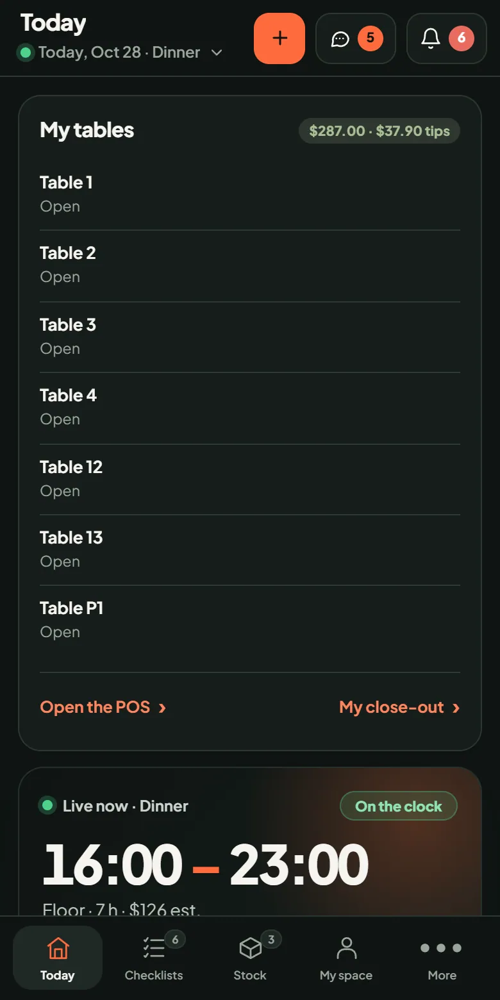

Managers
- Approve swaps, sign-offs and low-stock orders from one screen, not five.
- Change a dish, a price or a shift once. The POS, the lists and pay follow.
- See the night’s labor, sales and 86s before you lock the door.

Brigly replaces the scheduling app, the clipboards, the inventory spreadsheet and the staff group text with one workspace, so every screen agrees. Built for independent restaurants and bars.

What Brigly replaces
Most restaurants run on a pile of apps that never talk to each other. Brigly puts the whole pile on one record.
One workspace. Scheduling, checklists, stock, menu, POS, reservations, team, training and reports on the same record.
See it all in one placeHow it works
The kitchen runs out of sea bass. One tap in Stock, and every screen that matters updates at the same moment.
No re-entering. No “did anyone tell the bar?”. The record changed, so everything that reads it changed.
Same idea, people side
Features
Every feature in Brigly sits where a restaurant day actually puts it. Pick a moment.


For your team

Owners: the numbers are ready without a spreadsheet. See the reports

About
I’ve spent 20 years in hospitality, in Europe and the US, from the first shift on the floor to running the house. Every place I worked ran on the same stack: clipboards by the pass, a group text that never stopped, and a Monday spent rebuilding the week in a spreadsheet. Nothing agreed, so somebody always had to be the person who knew. Brigly is the system I kept wishing someone would hand me: one record for the whole restaurant, so the team can just run the shift.
Jonas SchrammFounder, Brigly · 20 years in restaurants and bars
Try the restaurant I built it forFAQ
Short answers. The demo has the long ones.
Yes. Every screenshot on this page comes from the working app, and “Make it live” swaps any of them for the real thing, running in your browser. The demo is a fictional restaurant, The Copper Room, with six months of sample history. There is no sign-up. Try the live demo.
Brigly is in preview. The demo is free, with no account and no card. Pricing will come later, and it will be built for independents, not enterprise contracts.
Not to try it. The demo includes Brigly’s own POS so you can see what service looks like on one record. How Brigly fits beside an existing POS is a question for the first real customers, and we will be honest about what works.
None to start. Brigly runs in a browser on the computer, tablet or phone you already have. Card readers, printers and kitchen screens are not part of the preview yet.
Yes. The staff view is built for phones first: bottom navigation, day schedules, one-tap sign-offs and the briefing before the shift. Nothing to install.
Recipes are marked as drafts until a manager verifies them. Only verified records count for service lookups and training, and allergy questions always point back to the kitchen record.
In the preview, only in your browser. The demo stores changes in your browser’s local storage, sends nothing to a server, and resets if you clear it. There is no account or backend yet.
Same shift, same record. When a server reads the briefing, submits a list or asks for a swap, it lands on the manager’s Today screen for a one-tap approval. Switch roles in the demo to see both sides.